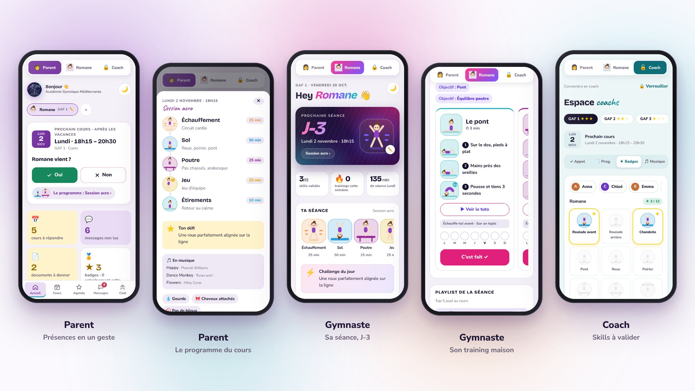
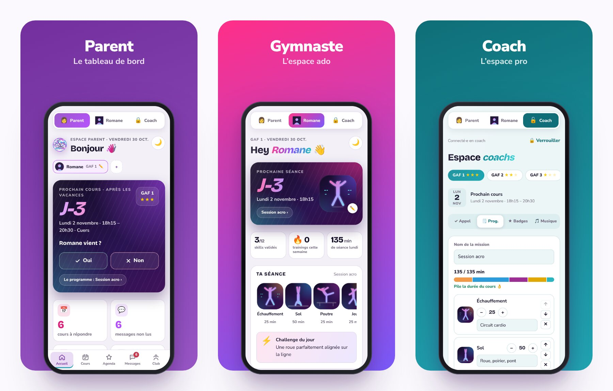
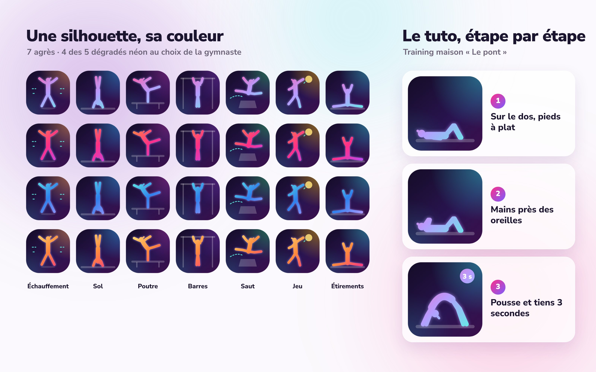
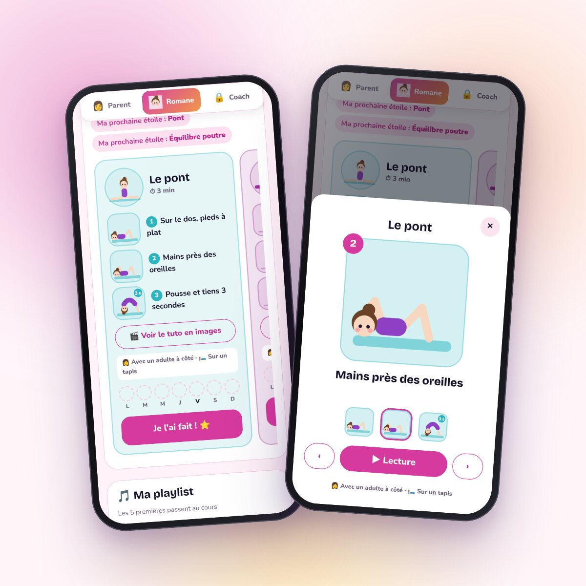
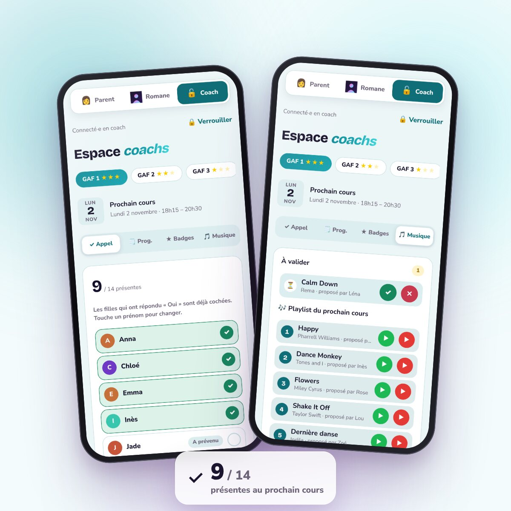
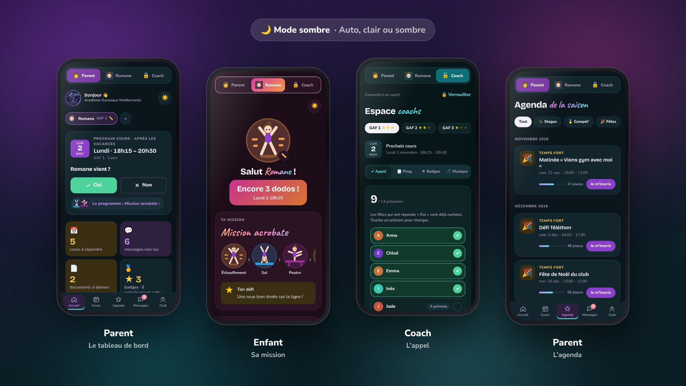
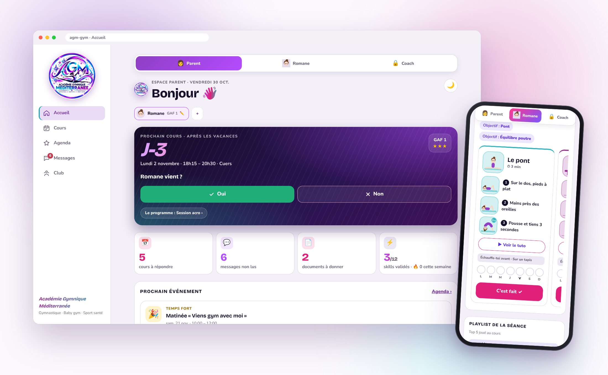

L’appli d’un club de gym associatif, pensée pour les parents, les enfants et les coachs.
Un club de gymnastique du Var, l’Académie Gymnique Méditerranée, avec peu de moyens et beaucoup de bénévoles. Les infos passent par un site, des messages et le bouche-à-oreille. Les coachs ne savent pas qui viendra au cours, et les parents ne sont pas tous à l’aise avec les applis. L’objectif : une appli très simple, peu de texte, et assez ludique pour que les enfants aient envie de l’ouvrir.
« Romane vient ? » Oui ou Non, et les coachs sont prévenus. L’accueil tient en un tableau de bord lisible d’un coup d’œil.
Chaque enfant crée sa gymnaste. Elle illustre le programme du cours, les défis à la maison et les badges.
Une couleur par mode, toujours visible en haut de l’écran. L’espace coachs est protégé par un code.

Une même appli, trois publics. Les parents gèrent les présences, l’agenda, les documents et les messages. Les enfants découvrent leur mission avant le cours et s’entraînent à la maison. Les coachs font l’appel, composent le programme à partir d’une banque d’exercices et valident les badges.






La vidéo de lancement. Une barre de question se tape lettre par lettre puis se transforme en écran de l’appli, d’une scène à l’autre : un parent, un enfant, un coach. Animation image par image et bande-son composée pour l’occasion.
Passez d’un mode à l’autre, répondez aux présences, ouvrez un tuto, inscrivez-vous à un stage. Espace coachs : n’importe quel code à 4 chiffres.